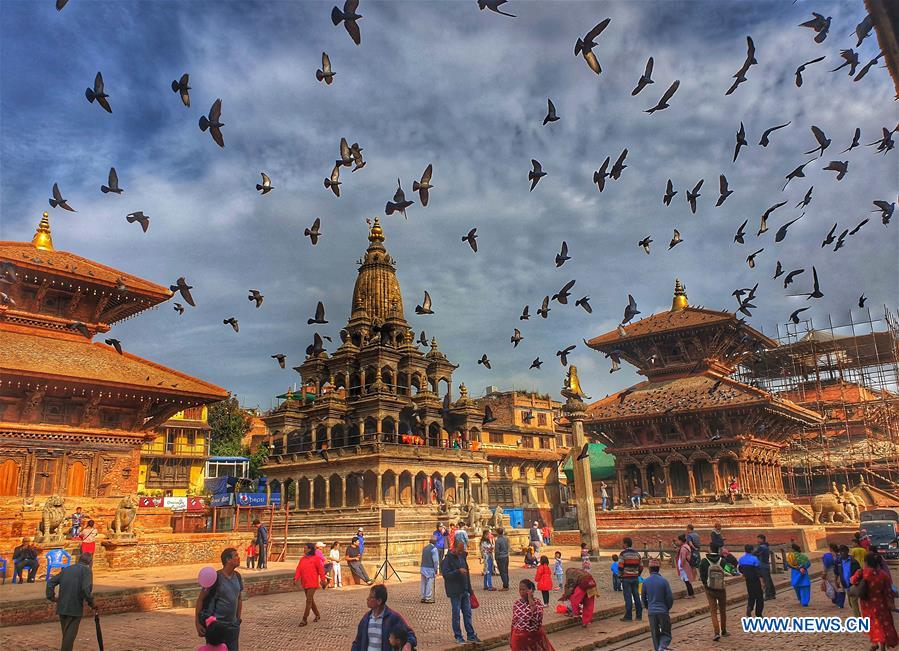
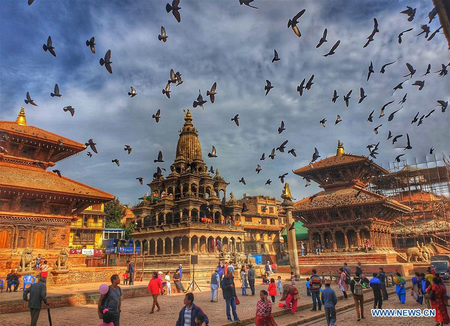

カトマンズはヒマラヤの山々に囲まれた盆地にあるネパールの首都です。旧市街の迷路のような路地の中心にはダルバール広場があり、仮面をつけた踊りが呼び物の宗教的な祭り「インドラ ジャトラ」の間は、この広場に大勢の人が集まります。2015 年の地震では市内の史跡の多くが破壊されました。ダルバール広場にある旧王宮のハヌマーンドカと木造のヒンドゥー教寺院であるカスタマンタブ寺院は、現在修復が行われています。
1.パターンダルバー
2.バクタプル
3.スワヤンブナート


カトマンズはヒマラヤの山々に囲まれた盆地にあるネパールの首都です。旧市街の迷路のような路地の中心にはダルバール広場があり、仮面をつけた踊りが呼び物の宗教的な祭り「インドラ
ジャトラ」の間は、この広場に大勢の人が集まります。2015
年の地震では市内の史跡の多くが破壊されました。ダルバール広場にある旧王宮のハヌマーンドカと木造のヒンドゥー教寺院であるカスタマンタブ寺院は、現在修復が行われています。
1.パターンダルバー
2.バクタプル
3.スワヤンブナート
1.アリアブティックホテル 
2.ハイアットリージェンシーカトマンズ
3.ドワリカのホテル
4ラディソンホテルカトマンズ
1.ネパールカーナ
Dal、Bhat、Tarkariは有名なネパール料理です。ここで、ダルはレンズ豆を意味し、バートは米とタルカリを意味します
カレーを意味します。これらと一緒に、漬物と一緒に肉とヨーグルトがあります。彼らは「ダルバトの力」と言います
ネパールでは4時間24時間のピザ電力です’’
桃子は実際には中華料理ですが、ネパールのカトマンズでは非常に人気のネワーリ料理です。モーモーは、ピクルスとソースが添えられた肉または野菜とチーズの団子です。

ロティはネパールのパンで、温かい油でブレスレットとして丸く調理されています。ナンも小麦の一種です
土鍋オーブンで調理したパン。これらのパンはカレーによく合います。
壮大なヒマラヤ山脈と魅力的なインドのジャングルの間に位置するネパールは、ヤク、イエティス、山頂、隠された修道院などが一般的に見える土地であり、国が外国人に国境を開いて以来、魅惑的な目的地として登場しましたあらゆるタイプのトレッカーがいます。多くは有名なエベレストベースキャンプに向かっています。険しいトレイルは比類のないトレッキングの機会を提供し、エベレスト登山の魅力は世界中の登山者を引き付けるのに十分でした
それで、ネパールでやるべきトップ7のリストをご紹介します。
大きな池、きれいなお寺が、壮大な山の風景に見どころを添えます。
そこに住む人々や風景に溶け込んでみましょう。
ヤクルは、ネパールのアンナプルナ山で開催される
世界最高の数日間のエンデューロレースです。
毎年秋には、約40人のライダーが
この冒険をすることができます。
ネパールに行ったならぜひ訪れたい、標高8848mにも
及ぶ世界最高峰の山エベレスト。ヘリコプターツアーなら体力のない
方も安心で、気軽にエベレストの散策や写真撮影を楽しむ
事ができます。
ボテコシ川ラフティングは、ネパールの短いホワイトラフティング
の1つです。ボテコシ川はネパールで最も速い川です。
ラフティングはやりがいのある冒険です。
Everyday morning 9:00am-22:00pm。
| やる事 | 値段 |
|---|---|
| バンジージャンプ | 6000rs |
| ラフティング | 7000rs |
| 樹木 | 7000rs |
| ヘリコプターツアー | 5000rs |
Adress:Kathmandu,Nepal
Ph.no.:+9779841860522
受付時間:7:00am-22:00pm